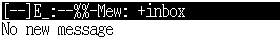
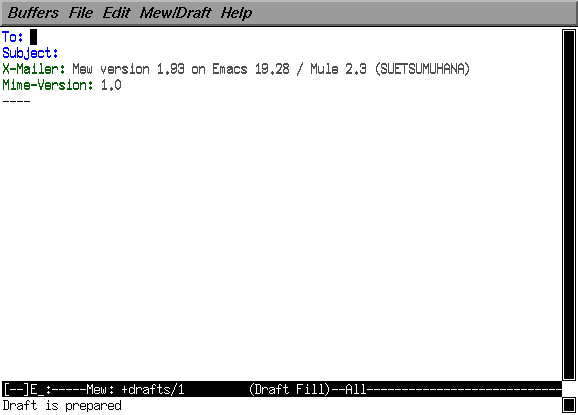
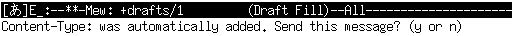

情報処理 I － 第７回
１．電子メール
メールアドレスについて
コンピュータ（とネットワーク）を使って、
コンピュータの利用者の間でメッセージの交換、
すなわち手紙のやり取りを行うことができます。
これを
電子メール（メール、Ｅメール、e-mail）
と言います。
手紙を出すには宛名と住所を書かなければならないのと同じように、
電子メールを送る時もメッセージの宛先を指定してやる必要があります。
この宛先を、
メールアドレス
と言います。
みなさんも既にメールアドレスを持っており、
システム情報学センターの利用承認書に書かれています。
但し、それは システム情報学センターのマシン
（３階の演習室やシステム情報学センターの演習室のマシン）
を使用するときに使うメールアドレスで、
この６階の演習室で使用するものとは異なります。
この６階の演習室では、この講義の第２回の
Netscape の初期設定において、
E mail Address として設定した
システム工学部のメールアドレス
を使います。
| システム工学部（６Ｆ演習室）のメールアドレス
| ユーザ名@sys.wakayama-u.ac.jp
|
| システム情報学センター（３Ｆ演習室ほか）のメールアドレス
| ユーザ名@center.wakayama-u.ac.jp
|
メールアドレスの "@"（アットマーク)より右側の部分
（sys.wakayama-u.ac.jp のところ）を、
ドメイン名 と言います。
これは、まあみて分かる通り、
"@" より左側の“利用者”の“住所”に相当します。
jp:japan～日本の、ac:academic～学校関係の、wakayama-u～和歌山大学の、
sys～システム工学部、の誰々、という具合いですね。
詳しくは教科書の119ページ以降を参照してください。
メールリーダ
電子メールを読み書きするためのソフトウェアを、
メールリーダと呼びます。
このコンピュータにはメールリーダもいろいろなものが用意されています。
| mail | もっとも基本的なメールリーダ、コマンドで使用
|
| Mail | 基本的なメールリーダ、mail よりは機能豊富、コマンドで使用
|
| zmail (MediaMail) | マルチメディアデータを扱えるメールリーダ、ウィンドウで使用
|
| Netscape Mail | Netscape Communicator に含まれるメールリーダ、ウィンドウで使用
|
| MH | 複数のコマンドで構成された高機能なメールリーダ
|
| xmh | MH をウィンドウで使用するためのユーザインタフェース
|
| RMAIL | emacs 系エディタ (mule, emacs, xemacs) に組み込まれたメールリーダ
|
| mh-e | MH を emacs 系エディタ中から使用するためのユーザインタフェース
|
| mew | MH を emacs 系エディタ中から使用するためのユーザインタフェース
|
- 現在 mail コマンドで Mail が起動するように設定されています。
- mail/Mail コマンドでは、メールを送ることはできますが、
届いたメールはサーバマシンに集められるので、
これらのコマンドでは読み出すことができません。
- zmail (MediaMail) も、
届いたメールを読み出すためには設定の変更が必要です。
このメールリーダは
今は使用しないでください。
- Netscale Mail は既に設定を行っていますので、
使用可能です。
この授業では教科書の123ページから説明されている
Mew を使います
（教科書のものよりバージョンが新しいので、少し異なる部分があります）。
Mew の起動
それでは、Mew を使ってみましょう。
“コンソール”か“UNIXシェル”を開き、
次のようなオプションをつけて mule を起動してください
（既に起動している mule の中から Mew を起動するには、
M-x mew とタイプして改行します）。


Mew を起動すると、
バッファのウィンドウに上のようなオープニングのメッセージを表示したあと、
ミニバッファに右のように表示します。
ここでは単に [Enter] をタイプしてください。

次にパスワードを尋ねてきます。
ここにあなたのパスワードをタイプしてください
（タイプしたパスワードは表示されません）。
そのあと [Enter] をタイプすると、
あなたに今届いているメールを取り出します。
取り出したメールは
inbox という
フォルダ
（届いたメールを保存しているディレクトリ）に保存します。

誰からもメールが届いていなければ、
右のように "No new message" と表示します。
| Mew がうまく起動できないとき
|
|---|
|
Mew は起動に失敗すると、
チェックすべき設定項目の一覧が表示します。
これらは最初に Mew を起動したときに自動的に設定されるはずですが、
何らかのトラブルでうまく設定できないこともあるかも知れません。
その場合は知らせてください。
|
メールを書く
では、手始めに、自分宛にメールを送ってみましょう。
w をタイプしてください。
するとバッファのウインドウが下のように変わります。

メールを送るには、
この To: と Subject: の欄に、
それぞれ宛先のメールアドレスとメッセージの見出しを書きます。
メールアドレスは ","（コンマ）で区切って複数書くことができます
（同じメッセージを複数の人に送ることができます）。
また、To: とは別に Cc: で始まる行を設けて、
そこにメールアドレスを書くこともできます
（"Cc" は Carbon Copy の意味で、
“カーボン紙で複写したものを送る”という意味です）。
では、
自分宛にメールを送るために、
- To: の右側に
- 自分のユーザ名@sys.wakayama-u.ac.jp
- Subject: の右側に
- 自分宛のメール
と書いてください。
メールアドレスには空白を入れてはいけません。
ちょっと長いですが続けてタイプしてください。
そのあと、---- の下にカーソルを移動し、
メッセージの本文を書いてください。
To: 自分のユーザ名@sys.wakayama-u.ac.jp
Subject: 自分宛のメール
X-Mailer: Mew version 1.93 on Emacs 19.28.1 / Mule 2.3 (SUETSUMUHANA)
Mime-Version: 1.0
----
おげんき～？[Enter]
[Enter]
和歌山健太郎[Enter]
|
自分のメールアドレスや見出しなどを書くときには、
それら以外の部分を変更しないように注意してください。
特に ---- を変更すると、
メールが送れなくなる場合があります。
うっかり変更してしまった場合は、
元に戻せば大丈夫です。
その際には C-_
（[Ctrl] と [Shift] を押しながら
[Backspace] の２つ左の - をタイプ）を使うと便利です。
電子メールを書くときは、
電子メール特有の注意事項がいくつかあります。
- 宛先のメールアドレスは正確に書いてください。
でないと届きません（あたりまえ）。
- メッセージの本文の最後には自分の署名を入れておきましょう。
- １行の長さは70文字（全角で35文字）以下にしましょう。
それには行末をそろえる M-q を使うと便利です。
- 一度送ったメールは、取り消すことができません
（ポストに投函した手紙は普通取り戻せませんよね？）。
出してしまって本当に良いのか、
今一度よく考えてから出しましょう。
- 秘密の話は、電子メールを使わない方がいいでしょう。
一応他人が読めないようにはなってますが、
宛先の間違いなどがあるとエラーメールとして管理者に届いてしまいます。
ここまで書けたらメールを送信しましょう。
C-c C-c をタイプしてください。
ミニバッファに下のような表示があらわれたら、
[Enter] をタイプしてください。
これで送信完了です
（送信したくないときはスペースをタイプしてください）。

うまく送信ができたら、同様にして、
今度は
test@sys.wakayama-u.ac.jp
というメールアドレスにメールを送ってみましょう。
見出しや本文は何でもかまいません。
このメールアドレスは人間のユーザではなく、
自動的に返事を書いてくれるプログラムです。
| メールが送られなかったとき |
|---|
|
宛先を間違うとメールは送られません。
-- Posting for All Recipients --
hanako: loses; [USER] 550 hanako... User unknown
post: 1 addressee undeliverable
send: message not delivered to anyone
上のような表示が出たときは、
メールは誰にも送られていません。
元の画面に戻るには C-x k [Enter] をタイプしてください。
システム工学部以外に出したメールが、
宛先が間違いや何らかのトラブルで届けられなかったときは、
MAILER-DAEMON からメールが来ます。
これはコンピュータが自動的に発送するメールなので、
このメールには返事を書かないでください。
メールの送り直しは、次のような手順で行います。
一度送信したメッセージは、drafts というフォルダに保存されています。
g をタイプして drafts というフォルダに移ってください。
Folder name (+inbox):+drafts[Enter]
そこで送れなかったメールのところにカーソルを移動し、E
（大文字）をタイプしてください。
メッセージの編集画面になりますから、
宛先を修正したあと C-c C-c をタイプしてください。
そのあと i をタイプすると、
inbox に戻ります。
|
メールを読む
では、次はあなた宛に届いたメールを読んでみましょう。
Mew を実行している mule のウィンドウで
i をタイプしてください
（２通届いていなければ、少し時間をおいてからもう一度
i をタイプしてください）。
 左から“メールの番号”、“日付”、“差出人”、“見出し”、
“本文の一部”が表示されます。
ここでスペースをタイプすると、
カーソル位置のメッセージの内容を表示します。
スペースで次の画面、
[Backspace] で前の画面を表示します。
[Enter] だと１行ずつ先に進みます。
左から“メールの番号”、“日付”、“差出人”、“見出し”、
“本文の一部”が表示されます。
ここでスペースをタイプすると、
カーソル位置のメッセージの内容を表示します。
スペースで次の画面、
[Backspace] で前の画面を表示します。
[Enter] だと１行ずつ先に進みます。
 他のメールを読むには、
n（次のメール）または
p（前のメール）をタイプしてください。
他のメールを読むには、
n（次のメール）または
p（前のメール）をタイプしてください。
返事を書く
それでは、自分が出したメールに返事を書いてみましょう。
自分宛に出したメールを表示させて、
a をタイプしてください。
 これで、メールの差出人に返事を書くことができます。
ところで、返事には差出人のメッセージを引用した方が、
返事を受け取った人が「はて、何の話だったっけな？」と悩まずに済みます。
そういう場合は C-c C-y をタイプしてください。
差出人のメッセージに ">" を付けて、
引用してくれます
（返事を書くときの a の代わりに
A をタイプすると、最初から引用してくれます）。
なお、引用する場合は、相手のメッセージを全部引用せず、
必要部分以外は削除するようにしてください。
これで、メールの差出人に返事を書くことができます。
ところで、返事には差出人のメッセージを引用した方が、
返事を受け取った人が「はて、何の話だったっけな？」と悩まずに済みます。
そういう場合は C-c C-y をタイプしてください。
差出人のメッセージに ">" を付けて、
引用してくれます
（返事を書くときの a の代わりに
A をタイプすると、最初から引用してくれます）。
なお、引用する場合は、相手のメッセージを全部引用せず、
必要部分以外は削除するようにしてください。
メールを整理する
不要なメールを削除するには、
削除したいメールのところにカーソルを移動し、
d をタイプしてください。
そのメールに "D" という削除マークが付きます。
メールを分類して保存したいときは、
o をタイプしてください。
そのメールを移動するフォルダを聞いてきます。
フォルダの名前を入力して [Enter] をタイプしてください。
そのフォルダがなければ、新たに作ります。
移動するメールには "o" というマークがつきます。
その後 x をタイプすると、
マークをつけたメールの移動や削除を行います。
メールに付けた "D" や "o" のマークを消したいときは、
x をタイプする前に、
そのメールにカーソルを移動し、
u をタイプしてください。
この時、
n や p
ではマークの付いたメールを飛ばしてしまうので、
C-n あるいは C-p を使います。
U をタイプすると、
すべてのマークを消します。
Mew を終了する
Mew を終了するには、q をタイプしてください。
Q をタイプすると、
本当に終了するのかどうか問い合わせてきます。
これは mule の中で mew を終了する
（元のバッファに戻る）だけなので、
必要ならこのあと C-x C-c で mule を終了してください。
署名の付け方
毎回メッセージに署名を書くのが面倒な人は、
署名を書いた .signature
というファイルをホームディレクトリに置いてください。
- “コンソール”か“UNIXシェル”を開く。
- ホームディレクトリに移動する
（たぶん、普通はそこはホームディレクトリになっていると思いますが、
心配なときは pwd コマンドで確かめてください）。
- mule で .signature というテキストファイルを作成します。
- 署名を書いてください。
ただし、自分の電話番号や住所は書かない方が無難です。
署名の１行も70文字（全角で30文字）以内、行数は４行以内にしてください。
- C-x C-s でファイルを保存してください。
- C-x C-c で mule を終了してください。
こうすると、Mew を使ってメールを書いているときに、
C-c C-i または C-c [Tab] をタイプするだけで、
その署名をメッセージの中に埋め込んでくれます。
| "."（ピリオド）で始まるファイル名について
|
|---|
|
.signature や .mh_profile、
それに後述する .forward のように
ファイル名が "."（ピリオド）から始まるファイルは、
ls コマンドやディレクトリウィンドウでは表示されません。
これを見えるようにするには、
ls コマンドの場合は ls -a という具合いに
-a オプションを付けてください。
ディレクトリウィンドウでは、
メニューバーの“表示”の“隠しファイル”を選択して、
チェックマークを付けてください。
|
| 携帯電話等へのメールの自動転送について
|
|---|
|
６階の演習室あてに来たメールを、
携帯電話や他プロバイダ、
あるいはシステム情報学センター（３階演習室を含む）
に自動的に転送したいときは、
ホームディレクトリに転送先のメールアドレスを書いた .forward
というファイルを作成してください。
s065000@sys.wakayama-u.ac.jp
09012345678@docomo.ne.jp
上の例の一つ目は自分の（この６階の演習室の）メールアドレスです。
こうしないと届いたメールを６階の演習室で読み出すことができません。
ただし、
転送先からこちらにまた転送し直すような設定は
しないでください。
そういうことをすると、
届いたメールが転送先との間を往復して、
結局あなたには届きません（エラーになって、差出人に戻されます）。
|
課題
Mew を使って tokoi@sys.wakayama-u.ac.jp 宛にメールを書け。
- 見出しや署名も付けてください。
- 本文には授業の感想とか、要望なんかを簡単に書いてくれるとうれしい。
- その後 tokoi@sys.wakayama-u.ac.jp から返事を書くので、
それに対しても返事を書いてください。
| キー操作
|
| Mew を起動する
| M-x mew
|
| 新着メールを取り込む
| i
|
| メールを読む
| スペース
|
| 次のメールを読む
| n
|
| 前のメールを読む
| p
|
| ほかのフォルダのメールを読む
| g
|
| メールに削除マークを付ける
| d
|
| メールを他のフォルダに移動
| o
|
| メールの削除／移動マークを消す
| u
|
| メールの削除／移動を実行
| x
|
| メールを書く
| w
|
| 返事を書く
| a
|
| 届いたメールを他の人に転送する
| f
|
| 引用して返事を書く
| A
|
| 引用する
| C-c C-y
|
| 書いたメールを送信する
| C-c C-c
|
| 書いたメールを破棄する
| C-c C-q
|
| Mew を終了する
| q または Q
|
mh-e の使い方は Mew に似ています。
Mew が用意されていない場合でも、mh-e はたいてい使えると思います。
２．ネットニュース
電子メールが１対１ないし特定のグループへのメッセージの送信を行うのに対し、
ネットニュースは不特定多数の相手に対してメッセージを送ります。
ただし、この不特定多数というのはインターネットの利用者全員と言うわけではなく、
まあ「ある特定の分野に興味を持っている人たち」というところです。
ネットニュースの利用者は、
自分が興味を持つ特定の分野に関係するメッセージを集めた
“ニュースグループ”
を“購読”します。
そのニュースグループに送られたメッセージは
“記事”
と呼ばれます。また、ニュースグループに記事を送ることを、
“投稿する”と言います。
ニュースグループ
ニュースグループは対象とする話題や配布範囲などによって、
階層的に分類されています。
ニュースグループの「最上位の分類」のことを
“トップカテゴリ”と呼び、
和歌山大学で購読しているトップカテゴリには以下のようなものがあります。
| トップカテゴリ
| 内容
| 言語
| 配布範囲
|
| comp
| コンピュータ関係
| 主に英語
| 全世界
|
| news
| ネットニュース関連
| 主に英語
| 全世界
|
| talk
| 語り合う場？
| 主に英語
| 全世界
|
| misc
| そのほか
| 主に英語
| 全世界
|
| rec
| 趣味
| 主に英語
| 全世界
|
| soc
| 社会問題
| 主に英語
| 全世界
|
| sci
| 科学一般
| 主に英語
| 全世界
|
| alt
| ムチャクチャ
| いろいろ
| 全世界
|
| fj
| 日本の代表的
ニュースグループ
| 主に日本語
| 一応全世界
|
| japan
| 日本のもう一つの
ニュースグループ
| 主に日本語
| 日本？
|
| tnn
| IIJが運営する
ニュースグループ
| 主に日本語
| 日本？
|
| kansai
| 関西の
ニュースグループ
| 主に日本語
| 関西？
|
| wakayama
| 和歌山の
ニュースグループ
| 主に日本語
| 和歌山市内の一部
|
| wadai
| 和歌山大学
| 主に日本語
| 和歌山大学ほか
|
| saga-u
| 佐賀大学
| 主に日本語
| 佐賀大学ほか
|
| nagasaki-u
| 長崎大学
| 主に日本語
| 長崎大学ほか
|
| ehime-u
| 愛媛大学
| 主に日本語
| 愛媛大学ほか
|
| mu
| 三重大学
| 主に日本語
| 三重大学ほか
|
| oita-u
| 大分大学
| 主に日本語
| 大分大学ほか
|
| geitan
| 大分県立芸術短期大学
| 主に日本語
| 大分県立芸術短期大学ほか
|
| nias
| 長崎総合科学技術大学
| 主に日本語
| 長崎総合科学技術大学ほか
|
| nbu
| 日本文理大学
| 主に日本語
| 日本文理大学ほか
|
| ksu
| 九州産業大学
| 主に日本語
| 九州産業大学ほか
|
和歌山大学のニュースグループ (wadai) のように、
その機関内だけで運用されているものを“ローカルニュースグループ”と呼びます。
佐賀大学や長崎大学などのニュースグループを購読しているのは、
これらの大学との間でローカルニュースグループの交換を行って、
互いの情報交換をしようとしていたからです。
このトップカテゴリの下に、
ニュースグループが話題別に分類されています。
たとえば、fj の下にはサブカテゴリとして rec があり、
その下に music というサブカテゴリがあります。
このニュースグループは fj.rec.music と表記され、
この中に記事が置かれています。
さらに、その下にもサブカテゴリがある場合があります。
たとえば fj.rec.music は一つのニュースグループですが、
fj.rec.music.progressive というニュースグループもあります。
ニュースリーダ
ネットニュースを読むためのソフトウェアを
ニュースリーダと呼びます。
このコンピュータにはニュースリーダもいくつかのものが用意されています。
| rn, trn | コマンドで使用するニュースリーダ、高速で使いやすい
|
| tin | コマンドで使うニュースリーダ、機能豊富
|
| mnews | コマンドで使うニュースリーダ、わかりやすい
|
| Netscape News | Netscape Communicator に含まれるニュースリーダ、ウィンドウで使用
|
| GNUS, Gnus | emacs 系エディタ (mule, emacs, xemacs) に組み込まれたニュースリーダ
|
- Netscape News は、
ニュースサーバ
（ネットニュースの記事の配送を担当しているコンピュータ）
に非常に大きな負荷をかけるので、この授業では使用しません。
- GNUS は Mew 同様 mule の中で使用できるので便利なのですが、
最初の起動が遅いのと、
すべてのニュースグループ（8000以上ある）が一度に表示されてしまうことから、
これもこの授業では使いません。
なお、
この問題は emacs/xemacs に組み込まれている Gnus では改善されていますので、
興味のある人は使ってみてください。
この授業では教科書の139ページから解説されている
mnews を使用します。
mnews の起動
それでは mnews を使ってみましょう。
“コンソール”か“UNIXシェル”で mnews を起動してください。
記事を読む
mnews は端末ウィンドウ上で動くので、
mnews を起動したウィンドウに次のように表示されます。
 C-n または
j でカーソルが下に、
C-p または
k でカーソルが上に動きます。
カーソルを目的のカテゴリのところに移動してスペースをタイプすれば、
そのカテゴリの中を見ることができます
（記事の数が多いときは、
実際に読む記事の数～ソートする記事の数を聞いてきます）。
n をタイプすると、
現在カーソルのあるニュースグループより後ろの、
未読記事の残っているニュースグループに移動します。
p をタイプすると、
前方の未読記事の残っているニュースグループに移動します。
多分、すべてのニュースグループを読んでやろうと思う人はいないと思います。
読まないニュースグループのところで u をタイプすると、
次回ネットニュースを読むときには一覧に現れなくなります（購読中止）。
ニュースグループの一覧に購読していないニュースグループも表示させるには、
l をタイプします。
購読を中止したニュースグループを再び読むようにするには、
そのニュースグループで u をタイプしてください。
記事を読むのをやめたり、
上位のカテゴリに戻るには q をタイプします。
トップカテゴリの一覧で q をタイプすると、
mnews は終了します。
それでは、wadai.test というニュースグループの記事を読んでみましょう。
ここはニュースリーダの動作テストや投稿練習に使うニュースグループです。
C-n または
j でカーソルが下に、
C-p または
k でカーソルが上に動きます。
カーソルを目的のカテゴリのところに移動してスペースをタイプすれば、
そのカテゴリの中を見ることができます
（記事の数が多いときは、
実際に読む記事の数～ソートする記事の数を聞いてきます）。
n をタイプすると、
現在カーソルのあるニュースグループより後ろの、
未読記事の残っているニュースグループに移動します。
p をタイプすると、
前方の未読記事の残っているニュースグループに移動します。
多分、すべてのニュースグループを読んでやろうと思う人はいないと思います。
読まないニュースグループのところで u をタイプすると、
次回ネットニュースを読むときには一覧に現れなくなります（購読中止）。
ニュースグループの一覧に購読していないニュースグループも表示させるには、
l をタイプします。
購読を中止したニュースグループを再び読むようにするには、
そのニュースグループで u をタイプしてください。
記事を読むのをやめたり、
上位のカテゴリに戻るには q をタイプします。
トップカテゴリの一覧で q をタイプすると、
mnews は終了します。
それでは、wadai.test というニュースグループの記事を読んでみましょう。
ここはニュースリーダの動作テストや投稿練習に使うニュースグループです。
- wadai はアルファベット順ではうしろの方にありますから、
C-n でカーソルを下の方に持っていってください。
- wadai のところにカーソルを移動したら、
スペースをタイプしてください。
- wadai.test のところにカーソルを移動し、
スペースをタイプしてください。
- 記事の一覧が表示されます。
スペースをタイプすれば、
カーソルのあるところの記事が表示されます。
- スペースをタイプしていけば、
次の記事に読み進んでいくことができます。
- n をタイプすれば、
読んでいる記事の残りを飛ばして次の記事に進むことができます。
| アナウンス用のニュースグループについて
|
|---|
wadai の下のニュースグループのうち、
以下のものは時々重要な情報が流れますので、
定期的にチェックしてください。
- wadai.general
- wadai.center.announce
- wadai.sys.announce
これらは
http://news.wakayama-u.ac.jp/
から Web ブラウザで読むこともできます。
|
記事を投稿する
それでは、
ここに記事を投稿してみましょう。
aをタイプしてみてください。
記事の題名（見出し）を聞いてくるので、
test とタイプしたあと
[Enter] をタイプしてください。
| 題名(subject)を入力して下さい:test[Enter]
|
次に配布範囲を聞いてきます。
この記事を和歌山大学以外に配布したくなければ local をタイプしますが、
今は空欄（[Enter]のみ）にしておいてください。
| 配布範囲(distribution)を入力して下さい:[Enter]
|
記事を作成するために使用するテキストエディタを聞いてきます。
既に /usr/local/bin/mule が入っていると思うので、
そのまま [Enter] をタイプします
（"-nw" オプション等が必要なら、ここに追加してください）。
| エディタ:/usr/local/bin/mule[Enter]
|
mule が起動し、.message というファイルの作成します。
--text follows this line-- の下にカーソルを移動し、
そこから記事の本文を書いてください。
この行を変更しないよう、気をつけてください。
Newsgroups: wadai.test
Distribution:
Followup-To:
Subject: test
--text follows this line--
投稿の練習です。[Enter]
（近況報告か何か書いてください）[Enter]
|
記事が書き終わったら、
C-x C-s でファイルを保存し、
C-x C-c で mule を終了してください。
作成した記事が画面に表示されるので、
一応スペースをタイプして一通り目を通してください。
| 記事を投稿してよろしいですか? [y/n/e(dit)/m(ime)]:
|
このまま投稿するなら、ここで y をタイプしてください。
投稿しないで記事を破棄するなら n、
もう一度エディタを起動して修正するなら e
をタイプしてください。
なお、wadai.test に投稿すると、
ニュースサーバが自動的に返事をメールで送ってきます。
記事にリプライする
ニュースサーバが送ってくれたメールのように、
記事の投稿者に対して電子メールで返事を送ることを、
記事に “リプライする” と言います。
それでは、自分の記事にリプライしてみましょう。
記事を投稿した直後は、
ニュースリーダーには自分の記事は現れないので、
一度 q をタイプしてニュースグループの選択画面に戻ったあと、
そこで g をタイプして新着記事をチェックしてください。
wadai.test の記事の数が１つ増えたことを確認したら、
もう一度 wadai.test に移って自分の記事を探してみましょう。
自分の記事が見つかったら、それを表示してみてください。
そこで r をタイプすると、
差出人宛にメールを書くために mule を起動します
（起動するエディタを聞いてきますので、
ここでもそのまま [Enter] をタイプしてください）。
記事の内容を引用する場合は、
r の代わりに R をタイプしてください
（不要な引用部分はできるだけ削りましょう）。
メールが書き終わったら、
ファイルを保存して mule を終了し、
記事の投稿と同じ手順でメールを送信してください。
フォロー記事を書く
投稿された記事に対して、
メールではなく記事の形で返事を書くことを、
記事に “フォローアップ（あるいは単にフォロー）する” と言います。また、そういう記事をフォロー記事またはフォローアップ記事と言います。
今読んでいる記事にフォローするには、
そこで f をタイプします。
記事の内容を引用するなら F をタイプします。
このあとの手順は記事の投稿と同じです。
引用する場合は、不要な部分を削ってください。
引用している部分の行数がほかの部分より多いと、
ニュースサーバは記事を受け付けてくれません。
投稿した記事を取り消す
記事を間違って投稿してしまったり、
投稿した記事の内容があとから読んだら不適切だった場合には、
投稿した記事を取り消す（キャンセル）
することができます。
キャンセルしたい記事を表示させて、
C（大文字の C）をタイプしてください。
なお、他人の記事はキャンセルできません。
また、自分の記事でも他のコンピュータから投稿した記事もキャンセルできません。
電子メールは、メッセージを書いたテキストファイルを、
相手のところに“コピー”するためのメカニズムだと説明しましたが、
ネットニュースも、記事を
「世界中のニュースサーバというコンピュータにコピーする」
ためのメカニズムです。
このために、
記事を投稿してから他の機関のニュースサーバで読めるまでの間には、
若干（数時間から数日）の遅れが生じます。
また、小さな記事でもあっても、
その転送には世界中の膨大な数のコンピュータが関わります。
できるだけ無駄な記事の投稿は控え、
有意義な記事を投稿するようにしましょう。
記事はニュースサーバの間をどんどんコピーされて伝わっていきます。
それぞれのニュースサーバでは、一定期間その記事を保存したあと、
その記事を消します。
“キャンセルする”というのは、
実は他のニュースサーバにコピーされた記事を、
直ちに消去するよう依頼する
“コントロールメッセージ”と呼ばれる特別な記事を投稿することで実現しています。
したがって、キャンセルしたからと言って、
世界中に配られてたその記事がすぐに消去されるわけではなく、
やはり若干の遅れが生じます。
時には、その間に他の人の目に触れることもあるので、
注意してください。
| ネットニュースのマナーについて
|
|---|
ネットニュースに投稿した記事は、
不特定多数の人の目に触れるわけですから、
その利用上のマナーについては、
電子メール以上に注意を払う必要があります。
- ネットニュースの記事も、
１行の長さは70文字（全角で35文字）以下にしましょう。
- 記事を投稿するときは、
記事の内容に合ったニュースグループを選択してください。
そのニュースグループが対象とする話題にそぐわない内容の記事を投稿しないよう、
気をつけてください。
まずはじめにそのニュースグループに投稿されている他の記事を読んで、
ニュースグループの雰囲気をつかんでから投稿するようにしましょう。
また mnews では、
記事の一覧を表示しているときに G をタイプすれば、
そのニュースグループの「憲章」を表示します。
- 異なるニュースグループに同じ内容の記事を投稿してはいけません。
この行為は“マルチポスト”と呼ばれ、嫌われます。
複数のニュースグループに記事を投稿したいときは、
記事を書いているとき、
最初の行の Newsgroups: にニュースグループ名を
","（コンマ）で区切って（スペースは入れずに）書きます。
これは“クロスポスト”と呼ばれます。
- トップカテゴリの異なるニュースグループ
（fj.jokes と wadai.talk.jokes とか）でクロスポストしてはいけません。
これらは配布範囲が異なるので、
一方のニュースグループの講読者が、
もう一方のニュースグループを読めるとは限らないからです。
- 記事の内容に責任を持ってください。
また、責任の所在を明らかにするために、
記事には必ず署名を入れてください。
匿名の記事を出してはなりません。
mnews は Mew のところで説明した .signature
を自動的に記事に埋め込みます。
- 他人を誹謗したり中傷するような記事、
流言飛語、卑猥な話、社会問題や国際問題をひきおこしそうな記事など、
いわゆる「公序良俗」に判するような記事は投稿してはいけません。
また fj のように、
ニュースグループによっては
営利目的の記事を禁止している場合もあります。
そのような記事を投稿した場合（他からそういう指摘を受けた場合）は、
あなたのコンピュータの利用権を停止することがあります。
電子メールやネットニュースというのは、
普通の社会の一つの断面に過ぎません。
あなたの目の前にはコンピュータがあるだけのように見えますが、
それはコンピュータネットワークを通じて、
実社会につながっているのです。
あなたの目の前のコンピュータの向こう側にも、
「人」がいるんだと言うことを忘れないでください。
|
課題
自分が投稿した記事に対して、
フォローアップ記事を書け。
- mnews は ? をタイプすると、
そのときに使えるコマンドの一覧を表示してくれます。